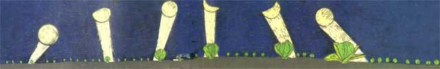
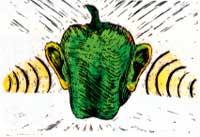
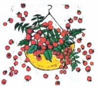

SEASONS OF THE GARDEN
Does science support lunar folklore?
Every year, all the almanacs tout the best times to plant, based on the moon's phase and location in the sky. In general, the guides say to sow aboveground-bearing crops during the waxing moon and belowground-bearing crops during the waning moon. The moon's astrological sign is supposed to make a difference, as well.
Does scientific research back such claims? Hard to say. In L. Kolisko's 1926-35 German trials, cabbage, lettuce, beans, peas, tomatoes and cucumbers sown two days before the full moon had better germination, more vigorous growth and higher yields than ones planted two days before the new moon. And after four years of work, Maria and Matthias Thun concluded that radishes sown when the moon was in the "earth" signs (Taurus, Virgo and Capricorn) showed the best root development, those sown in the "water" signs (Pisces, Scorpio and Cancer) had the most abundant leaf development, and those sown in "air" and "fire" signs tended to bolt and seed well.
Other researchers have come up empty-handed. A. Becker in 1937-38 found no significant differences in crops planted on "favorable" days versus ones sown on "non-favorable" days. And K. Mather and J. Newell sowed various fruits and roots two days before each moon quarter and also found no correlation between plant growth and moon phase.
Why the contradiction? The problem may come from the fact that no research (that we know of) has correlated both moon phase and moon position with plant growth, in accordance with the claims of the almanacs. In short, the field seems quite unsettled. Perhaps we can organize an amateur experimental group to help settle the issue of "lunacy in horticulture." Feel free to write us and join in.
Research Briefs
Don't buy precocious tomatoes. Ohio State University scientists demonstrated that tomato seedlings that are already fruiting when transplanted yield poorly-even if the cute little fruits are removed.
A little diversity goes a long way. California entomologists compared plantings of all one variety of broccoli to mixed plantings of four cultivars. They found that the combination crops had fewer cabbage aphids. So merely mixing varieties in a monocultural planting may help reduce pest problems.
Sweet apple buds. West German experimenters discovered that spraying fall apple buds with a 10% fructose solution increased the following year's fruit yields 20%. Why not try it? Fructose is readily available and (quite) nontoxic.
A very fruitful berry . The everbearing Tristar strawberry (Burpee Seed Co., Warminster, PA 18991-0003) produces fruit from spring into mid-October. In fact, its best berries come in fall. Total yields are two to three times those of most typical berries. Because of its small root system, though, Tristar does need some pampering.
Why do the obvious? Agricultural Research Service chemists in Peoria, Illinois, have become so impressed with organic matter that they've decided to imitate it. When they learned that microbes in healthy soil produce complex polysaccharides that help bind the soil and resist water erosion, they started making their own "soil polysaccharides" out of cornstarch binders. They'll spray those on chemically farmed fields to help them mimic organic ones.
Do seeds have ears? Bulgarian researchers report that exposing pepper and cucumber seeds to 20,000 Hz ultrasound (power unspecified) for three to seven minutes resulted in better germination, growth and fruit yields. If you try it yourself, wear earplugs!
So you do want cute little 'maters? Try growing cherry tomatoes in indoor hanging baskets. The varieties Golden Cherry, Florida Hanging and Tiny Tim all do well in 12-inch hanging baskets (two or three plants per basket).
The Winner? Fennel! Hilde Maingay carefully studied eight flowering herbs-dill, caraway, fennel, toothpick weed, spearmint, yarrow, rue and wild carrot-at the New Alchemy Institute to see which ones attracted the most beneficial insects. She concluded that "fennel had the greatest insect attendance and, furthermore, it had large attendance of 'good' insects." She also noted that fennel is easy to grow (start it indoors).
Working women's gloves. Womanswork gloves are made of brushed pigskin and really fit. Send a tracing of your hand and $14.95 (for unlined gloves) or $18.95 (for a pair lined with Thinsulate) to Karen Smiley, R.D. 539K, South Berwick, ME 03908.
Gleanings
"Roots-N-All" is a sturdy but lightweight hand- and foot-powered weed puller for those who don't want to stoop to weed. It's distributed by HelBecCo (1524 California Trail, Piano, TX 75023) and retails for only $9.95... .The planting tube offered by N1-BEX (P.O. Box 8585, Emeryville, CA 94662; send for free information) will let you plant seeds or transplants-even through plastic mulch-without bending over. ...
Gardening by Mail 2 ($18.50 postpaid from Tusker Press, P.O. Box 1338, Sebastopol, CA 95473; $19.50 in California) is a thorough and invaluable listing of garden supply companies.. . . You can support the Educational Concerns for Hunger Organization's efforts to spread information on growing and preparing food in nearly 100 Third World countries by buying its attractive note card sets ($4 postpaid from ECHO, Inc., 17430 Durrance Rd., North Fort Myers, FL 33917).... The National Arbor Day Foundation (Nebraska City, NE 68410) offers a free brochure on using shade trees and windbreaks, caring for trees during construction, planting and pruning trees and more.... For round-the-clock information on pesticide regulation, poisoning treatment, clean-up and so forth, call the National Pesticide Telecommunication Network: 800/858-7378.... The National Community Garden Preservation Program (contact Lisa Cashdan, Director, NCGPP,
The Trust for Public Land, 666 Broadway, New York, NY 10012) helps save community gardens threatened by development.... Donate $100 to the World Seed Fund (Abundant Life Seed Foundation, P.O. Box 772, Port Townsend, WA 98368), and 400 packets of fresh, open-pollinated vegetable seeds will be sent to growers in the developing country of your choice. . . . Employment Opportunities for College Graduates in the Food and Agricultural Sciences (free while supplies last from Higher Education Programs, USDA, Room 350-A, Administration Bldg., Washington, DC 20250) is a detailed report on the-quite rosy-employment prospects in agriculture-related fields. . . . The Proceedings of the First International Symposium on Wind-break Technology ($7 postpaid from IWS, 101 Plant Industry Bldg., University of Nebraska, Lincoln, NE 68583) include papers on windbreak designs, both urban and rural, to control erosion, cut heating bills and aid crop growth.
Greg and Pat Williams raise most of their food on a small farm and publish Hort-Ideas , a fine newsletter on gardening research and products ($15 a year from G. & P. Williams, Rt. 1, Box 302, Gravel Switch, KY 40328).
|
 |
 |
 |